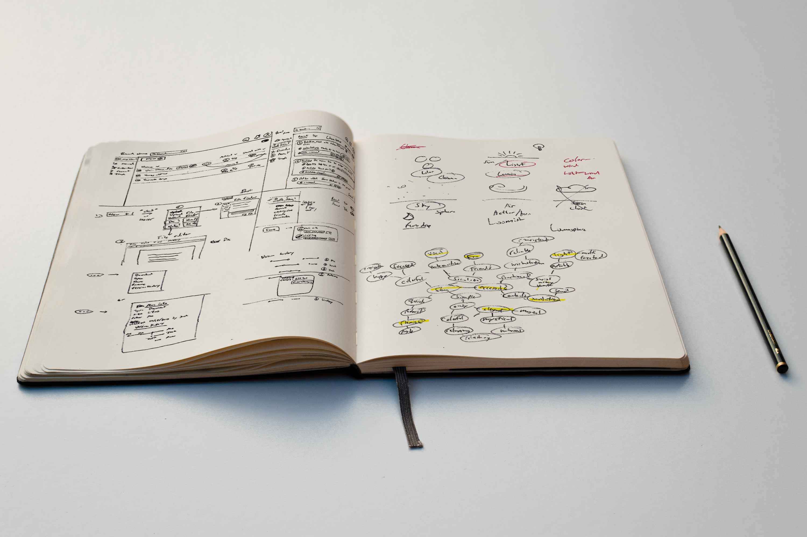
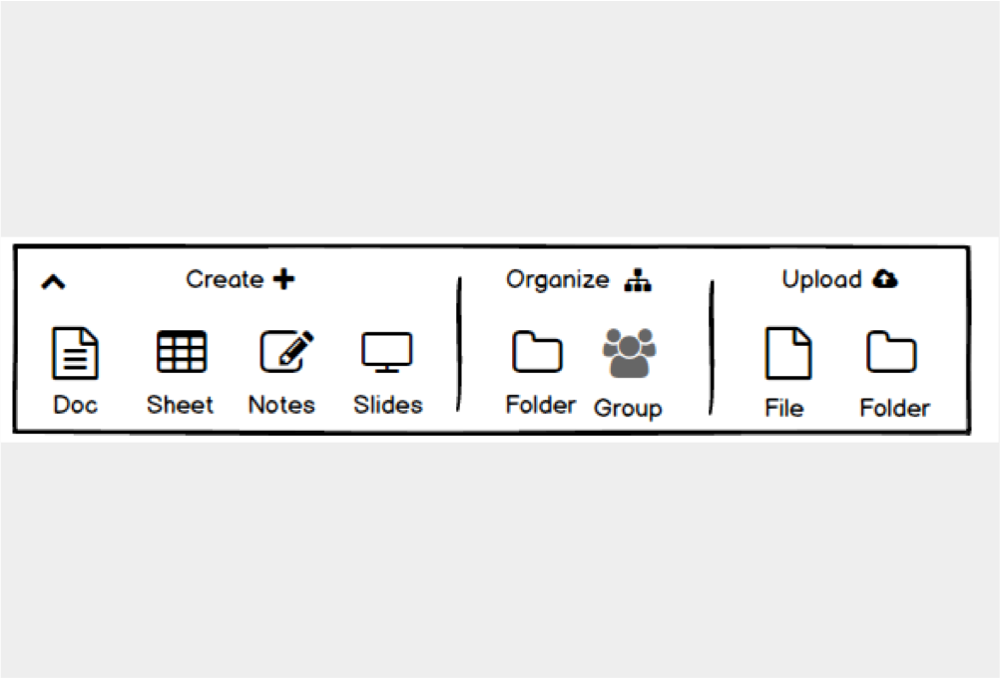
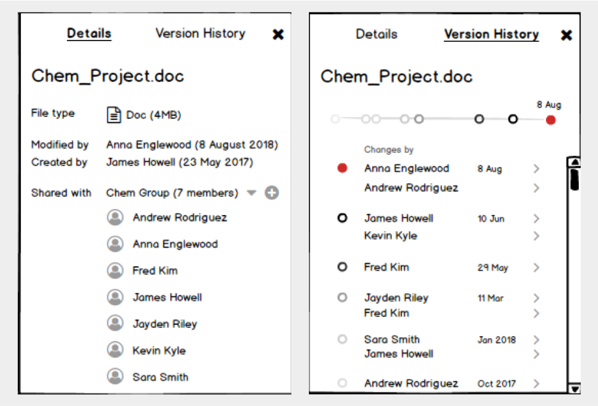
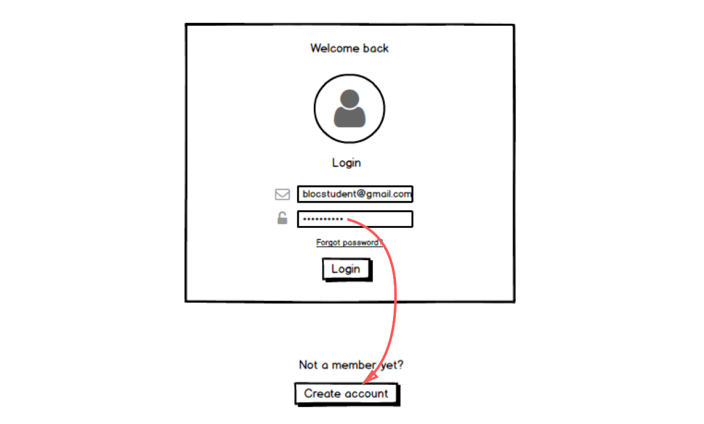
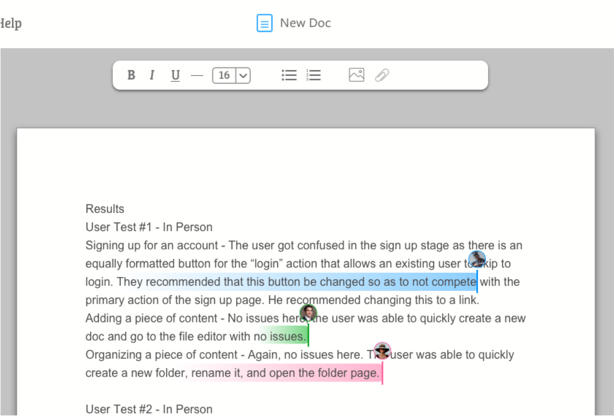
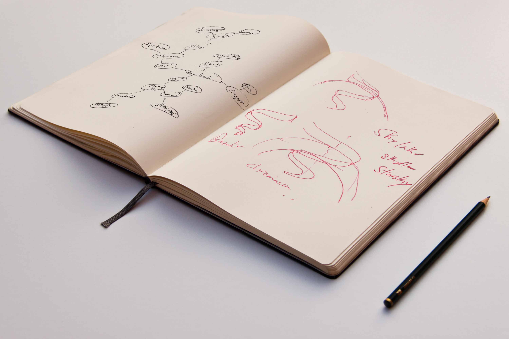

Summary
Skylake is a cloud app designed for a faster, cleaner, and more intimate collaboration experience.
| Roles | Deliverables | Tools | Competitive Analysis | Lo-Fi/Hi-Fi Mockups | Pen & Paper |
|---|---|---|
| Research & Design | Clickable Prototype | Illustrator |
| Content Strategist | Imagery & Icons | InVision |
| Brand Creator | Logo & Type | Sketch |
| Roles |
|---|
| Competitive Analysis Research & Design Content Strategist Brand Creator |
| Deliverables |
| Lo-Fi/Hi-Fi Mockups Clickable Prototype Imagery & Icons Logo & Type |
| Tools |
| Pen & Paper Illustrator InVision Sketch |
The Problem
Users have four main frustrations with current cloud apps
Feature creep, cluttered interfaces, and unclear navigation drown cloud user’s experience. Information overload and decision paralysis frustrates users as masses of features and ambiguous icons demand their attention.
The Solution
Built upon four pillars that address the user's concerns directly
Simple
Layout
2 column view with navbar, large profile photos and buttons
Easy
Navigation
One-click jump via link or button from any page
Efficient
Architecture
Group like-objects, essential features brought to surface
Social
Enabled
Collaborate via share, social feed, and live editing
The Design Process
Research & Discovery
I surveyed 17 individuals to identify user priorities, frustrations, preferences, and common practices. I use pain points and success factors to scope target audience, product direction, and brand identity.
Pain Points
Dashboards resemble aircraft cockpits with multitudes of ambiguous features cluttering the workspace. Information overload is something the user must constantly deal with.
Success Factors
Simplicity speaks as the favored trait whether it’s with the decision flow, architecture, wording, icons, functionality, or features. Users want an easy and shared experience.
Competitive Analysis
Survey results also reveal two top competitors in the cloud market - Google Drive and Dropbox.
Top Players

Questionable UI
These competitors have their strengths, but a closer look reveals some poor UI decisions that frustrate users.
Awkward Button Proximity
Users have to constantly look across the screen to find file-related actions.

Feature Bloat
What are all these features? What do they do? Is more really better?

Unnecessary Nesting
Users have to click “settings” after clicking the settings icon to get to settings.
Ambiguous Features
2x2 vs 3x3 grid icon - What’s the difference? What does the eye icon reveal? What is “Paper?”
The competition definitely lacks no features but you have to constantly work to find where they are and what they mean. Is this the experience we want for our users? Or more importantly, who are our users?
User Personas
Having understood the market, I visualized the potential consumers with user personas to give context to real world scenarios.
 |
 |
 |
Jacob |
Lauren |
Mark |
| 21, Los Angeles Engineering Student University Research |
28, San Francisco UX Designer Mobile Design |
43, Chicago Product Manager Healthcare Startup |
| Bio | ||
|---|---|---|
| Jacob is an engineering student who works part time as a researcher for his aerodynamics professor and studies aerodynamic flow with a wind tunnel. He likes to skateboard and even CNC milled his own parts. | Lauren is the lead designer in her design team. She functions in an agile environment and needs to quickly draft, test, present, and repeat to create seamless experiences for her users. | Mark is the technical lead who guides and directs development in a mobile healthcare startup. He works from home occasionally and uses Slack, text, and email to communicate with his team. |
| Motivations | ||
| Jacob's work needs to follow him from his home to the lab. He uses cloud to store and share group projects, data sets, and assignments. He just wants a simple and effective app to reduce the managerial stress so he can focus on his work. | Lauren uses cloud to store, share, and backup all her sketches, graphics, slides, and notes. She constantly bounces between different ideas and iterations so she needs cloud to centralize her work for her and her team. | Mark drafts his thoughts into docs and stores his notes for future reference. His work follows him whether he's in Colorado for a client meeting, interacting with offsite teams, or working remote in his PJs when his kids catch the flu. |
| Goals | ||
|
|
|
| Frustrations | ||
|
|
|
|
||
Lauren |
||
| 28, San Francisco UX Designer Mobile Design |
||
| Bio | ||
|---|---|---|
| Lauren is the lead designer in her design team. She functions in an agile environment and needs to quickly draft, test, present, and repeat to create seamless experiences for her users. | ||
| Motivations | ||
| Lauren uses cloud to store, share, and backup all her sketches, graphics, slides, and notes. She constantly bounces between different ideas and iterations so she needs cloud to centralize her work for her and her team. | ||
| Goals | ||
|
||
| Frustrations | ||
|
||
Varying ages, job roles, motivations, goals, and frustrations paints a broader picture of our target audience, which means more points for adjustment to tailor our product.
User Stories
With our personas in mind, I created a list of common use cases in the form of user stories. Every story tells of a mini journey but not all stories are born equal. Thus, I categorize task by priority and user type.
| High |
|---|
| All Users would like to choose a file type (Doc, Sheet, Note, Slides) when creating a new file. |
| Medium |
| All Users would like to edit live and view collaborative activity real time with color coded type line and change footprints. |
| Low |
| All Users would like to view version history to understand changes between two files. |
| High | Medium | Low |
|---|---|---|
| All Users would like to choose a file type (Doc, Sheet, Note, Slides) when creating a new file. | All Users would like to edit live and view collaborative activity real time with color coded type line and change footprints. | All Users would like to view version history to understand changes between two files. |
Priority dictates hierarchy, architecture, flow, and visual design. A minimum viable product is the initial goal so users first get what they need, then add nice-to-haves in succession.
User Flows
The app is one big system made of little systems that talk to each other. Drafting the logical flow between action and result is the first step to architecting an effective experience.
New Content - Three different branches of content creation can be managed with a single click.
Bare bones flow diagrams quickly reveal key decision points and unnecessary steps. Simplicity, accessibility, and efficiency are the goals. This means reducing steps, cross-referencing nodes, and grouping by common denominators.
Wireframes
Pen & Paper
User flows are fleshed out through wireframes to get a sense of a real world product. I start on paper, go through numerous versions, annotate, and repeat until the user flows are satisfied.


Balsamiq
Next, I draft Lo-Fi wireframes on Balsamiq because my handwriting is that of a child's... and to stay focused on content strategy before moving on to Hi-Fi.
Key Features

Dashboard
The create panel is enlarged to emphasize importance of content creation.

Social Feed
The Social feed is the hub for users to interact and engage more intimately than with a share link.

File Details
A details pane grants version history and key relevant data for the users to easily manage files at a glance.

Live Editing
Live change footprints and comment threads create a socially collaborative and engaging environment.
User Testing - First Round
What Worked
Users were able to create, organize, and share files with no issues. Navigation was quick and easy for the users.
What Didn't
When presented with two buttons, the users naturally click the bigger or bottom-most button without reading the text. Having two buttons creates a tension between options. In the login page, some users blindly clicked the “create account” button rather than “login.”

In the Hi-Fi stage, the primary page action was kept as a button and revealed after fillout. The Login button reveals on password fillout to grab the users attention with only one option. The secondary action (creating an account) was changed to a link and moved away from the visual path. Users don’t want to have to think about every action. Little breadcrumbs can steer users to confusion or success. Laying the right path determines that success.
Hi-Fi Mockups
Sketch
The dash is refined in Sketch with all the visual branding elements. Icons were carefully selected and colorized to commonly accepted color schemes. Typography and color support visual cues, information hierarchy, and object selection.
Features Refined

Dashboard
The "new" window opens on click and has 2 options - upload and create. Nav icons only reveal in the left column when selected.

Live Editing
Live footprints fade over time and quickly show users who are making edits. This personalizes the collaboration experience.
Version Control
Version history is shown with selectable nodes on a timeline. A donut chart also reveals the magnitude of changes made by each user.
Tile View
A tile view is available for quick preview and identification. This helps the user understand content directly.
User Testing - Round Two
What Worked
Users were able to easily navigate, manage files, invite members to groups, find file details and version history.
What Didn't
The Sign up process was 3 steps, which was 2 steps too many. Users just wanted to click and go, thus it was made to be.
Some users were confused with the “Group” action (creating new Groups or Folders). Some users associated the “new” button with files and folders, not new groups. Another user confused the “create folder” button with the “upload folder” button.
Thus, I removed the “Group” category and moved the “Create Group” button to the Social button in the navigation bar. I also moved the “Create New Folder” button to the “Create” category.

Reducing three categories to two reduces the cognitive load required to navigate. I added visual aids such as coloring and icons further differentiate the options.
In a preference test, 57% users preferred the second button layout with “...” button closer to screen center, and the star button left of the file name. The layout was changed based on proximity with relevant actions.
Brand Identity
I aimed to capture colorful personalities blended into the concept of cloud. I brainstormed around concepts such as sky, light, and color until I came to the aurora borealis for natural inspiration. Glowing particles flow through the sky like a river or lake in the sky. The name “Skylake” was phonetically smooth and captured the borealis and social elements.


The mountain is the origin of a single long stroke which ends openly to represent continuity or the infinite. Cloud has a sense of vastness and freedom that allows the user to connect within a single medium. I wanted to accentuate the mountain and aurora so I circled the logo and used negative space.
Conclusions
Successes |
Learnings |
|
|
Successes |
|
Learnings |
|